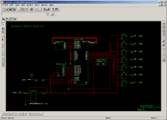
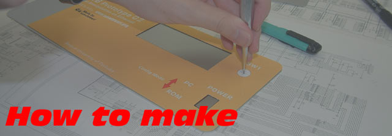

(2003.10.27 追加)
(2005.10.27 更新)

(2004.01.06 追加)
(2004.01.16 更新)

(2006.02.02 追加)
(2006.02.17 更新)

ここでは製作手法の中で特にまとめておこうと思ったものについて紹介します。
といいつつ、２個目からあんまり「製作」という感じでなくなりました。
ようは単なるTips集（備忘録？）です。
| 個人的作業メモ | 随時更新 |
| 個人的作業メモ2 | 随時更新 |
| VHDLメモ | 随時更新 |
|
インクジェット・プリンタで作るシャーシ・パネル |
 |
ViewDraw (ePD DxDesinger) とHDLの相互利用 (2003.10.27 追加) (2005.10.27 更新) |
|
Handel-CとEDIFの相互利用 (2004.01.06 追加) (2004.01.16 更新) |
|
EPSON PX-9500を六畳一間に入れてみる (2006.02.02 追加) (2006.02.17 更新) |